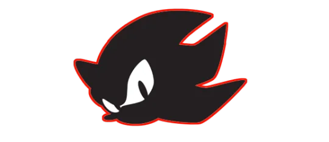

Pular para o conteúdo
Espaço pessoal
>
Painel
Theme of Zipped
Pausado
Trilha sonora
01 / 03
Theme of Zipped
0:00
0:00
5%
G.U.N. DATABASE
PROJECT_SHADOW / PERSONAL_ARCHIVE

Chaos… control!
Voltar ao terminal
Ative o JavaScript para explorar o terminal.
GitHub
·
Twitch